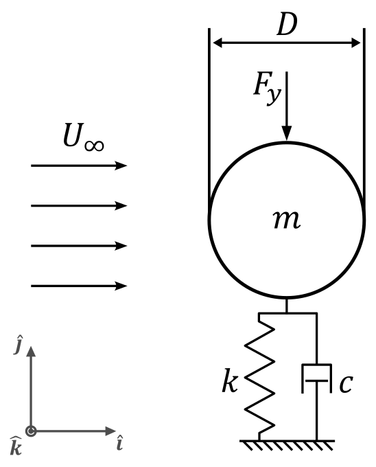
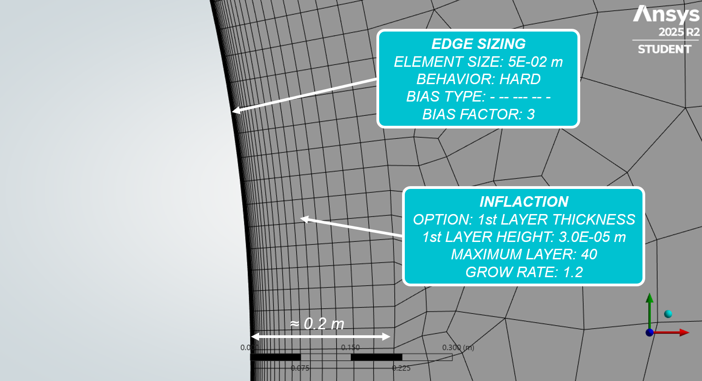
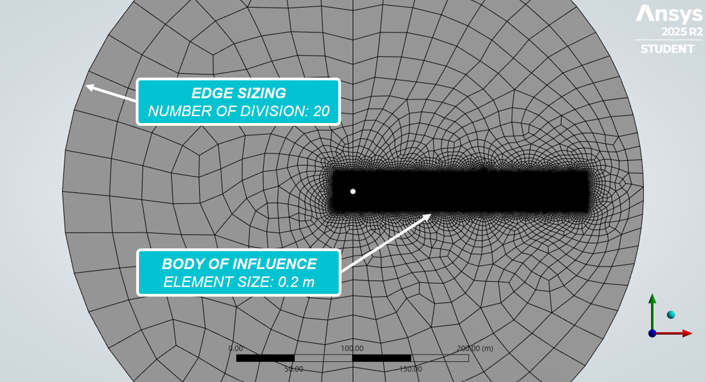
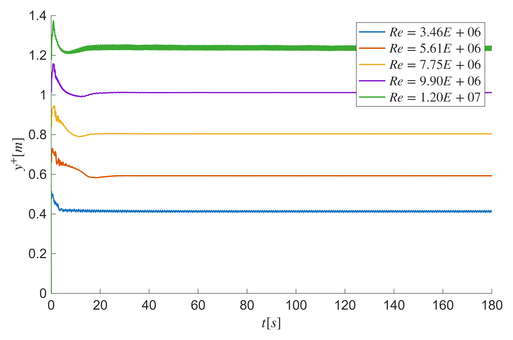
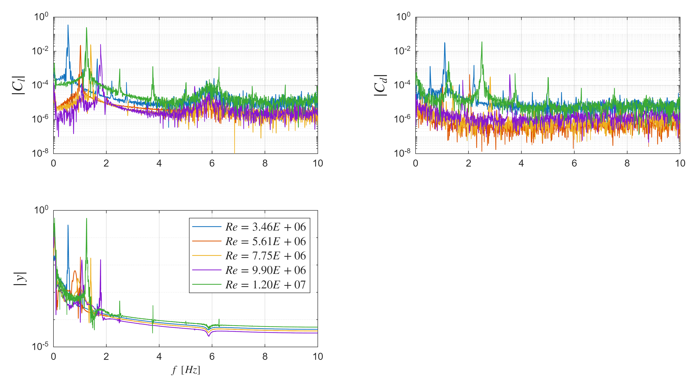

Transient 2D CFD Investigation of Vortex-Induced Vibrations
Executive Summary
- Objective: Parametric computational analysis of vortex-induced vibrations (VIV) on a 2D cylinder to predict resonance conditions and structural loads across varying flow regimes.
- Tools & Methodology: ANSYS Fluent (Transient CFD, SST $k-\omega$, Dynamic Mesh), MATLAB (Post-processing).
- Key Achievements: Successfully captured the lock-in phenomenon and aerodynamic load amplification. Validated boundary layer resolution ($y^+ \approx 1$) to ensure high-fidelity prediction of flow separation and vortex shedding.
1. Physical Model Formulation
The system is modeled as a fluid–structure interaction problem where a circular cylinder is elastically mounted and restricted to oscillate in the transverse cross-flow direction, as illustrated in Figure 1. This isolation of the transverse degree of freedom allows for focused analysis of aerodynamic load amplification during vortex shedding synchronization.
The governing equation of motion is:
$$\ddot{y}+2\zeta\omega_n\dot{y}+\omega_n^2y=F_y/m_{eff}$$
where $y$ is the transverse displacement, $\omega_n$ is the natural frequency, $\zeta$ is the damping ratio, $F_y$ is the transient fluid force extracted from CFD, and $m_{eff}$ is the effective mass.

2. Computational Setup & Methodology
2.1 Flow Conditions
A parametric study was conducted across different inlet velocities to cover a broad spectrum of Reynolds numbers, identifying the critical range for resonance excitation.
$$Re=\frac{\rho U D}{\mu}$$
| U [m/s] | Re |
|---|---|
| 10.1 | 3.46E+06 |
| 16.4 | 5.61E+06 |
| 22.6 | 7.75E+06 |
| 28.9 | 9.90E+06 |
| 35.2 | 1.20E+07 |
2.2 Mesh Strategy and Boundary Layer Resolution
Accurate prediction of separation points and drag forces requires stringent near-wall meshing. A comprehensive computational domain was built around the cylinder to ensure realistic wake development (Figure 2). Furthermore, a dedicated body-of-influence refinement zone was established downwind to limit numerical diffusion in the shedding wake, as highlighted in Figure 3. To support the SST $k-\omega$ turbulence model, which is highly effective for separated flows, the inflation layer was strictly sized to achieve a target $y^+ \approx 1$.

The first cell height $y$ was analytically predetermined using flat-plate empirical estimations:
$$C_f=\frac{0.079}{\sqrt[4]{x}}, \quad u_{\tau}=U_{\infty}\sqrt{\frac{C_f}{2}}, \quad y=\frac{y^+\nu}{u_\tau}$$
The total inflation layer thickness $\delta$ was designed with a geometric growth rate $r$ over $N$ layers to fully capture the boundary layer gradients:
$$\delta=h\frac{r^N-1}{r-1}$$

2.3 Solver Integration
Simulations utilized a transient, incompressible approach. Time step sizing was coupled to the anticipated vortex shedding frequency ($\Delta t < T/20$) to ensure temporal resolution. The structural response was coupled back into the fluid domain via dynamic meshing with a predefined mass ($m=28.5 \, kg$) and stiffness ($k=24.8 \, N/m$).
3. Results & Data Analysis
3.1 Model Validation
Post-processing confirmed that the non-dimensional wall distance $y^+$ was successfully maintained close to 1 globally throughout the transient execution, as shown in Figure 4. This validates the near-wall mesh strategy and ensures the high reliability of the calculated viscous forces and separation points.

3.2 Frequency-Domain Response
MATLAB was utilized to process the raw time-history data into Power Spectral Density (PSD) plots (Figure 5). The frequency domain analysis clearly isolates the vortex shedding frequencies. Notably, near critical velocities, the PSD confirms the onset of the "lock-in" phenomenon, where the vortex shedding frequency synchronizes with the structure's natural frequency.

3.3 Parametric Aerodynamic Loads
The extracted mean values and oscillation amplitudes for lift ($C_l$), drag ($C_d$), and transverse displacement ($y$) are summarized below. The data quantifies a distinct amplification in the lift coefficient and transverse displacement amplitudes during resonance, confirming the structural vulnerability in specific operational regimes.
| $Re$ | $\overline{C_l} \pm \lvert C_l \rvert$ | $\overline{C_d} \pm \lvert C_d \rvert$ | $\overline{y} \pm \lvert y \rvert$ |
|---|---|---|---|
| $3.46 \cdot 10^6$ | $0.009 \pm 0.351$ | $0.560 \pm 0.032$ | $-1.710 \, m \pm 0.290 \, m$ |
| $5.61 \cdot 10^6$ | $0.003 \pm 0.022$ | $0.373 \pm 0.000$ | $-1.713 \, m \pm 0.105 \, m$ |
| $7.75 \cdot 10^6$ | $0.001 \pm 0.024$ | $0.335 \pm 0.000$ | $-1.738 \, m \pm 0.179 \, m$ |
| $9.90 \cdot 10^6$ | $0.003 \pm 0.025$ | $0.349 \pm 0.000$ | $-1.472 \, m \pm 0.258 \, m$ |
| $1.20 \cdot 10^7$ | $0.000 \pm 0.247$ | $0.382 \pm 0.036$ | $-1.824 \, m \pm 0.524 \, m$ |
4. Conclusions & Future Scope
The 2D transient analysis successfully characterized the VIV response and quantified the aerodynamic loads acting on the SDOF system. While the SST $k-\omega$ model proved effective for near-wall flow separation, the primary limitation remains the 2D assumption, which conservatively neglects inherently 3D spanwise flow structures that can disrupt vortex coherence.
Next Steps: Future improvements will target a transition to a full 3D Fluid-Structure Interaction (FSI) model to incorporate modal coupling and validate against experimental wind-tunnel data.